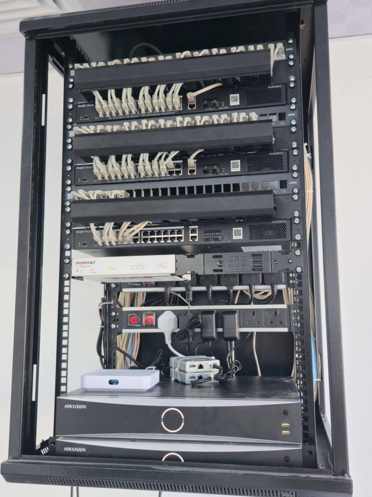
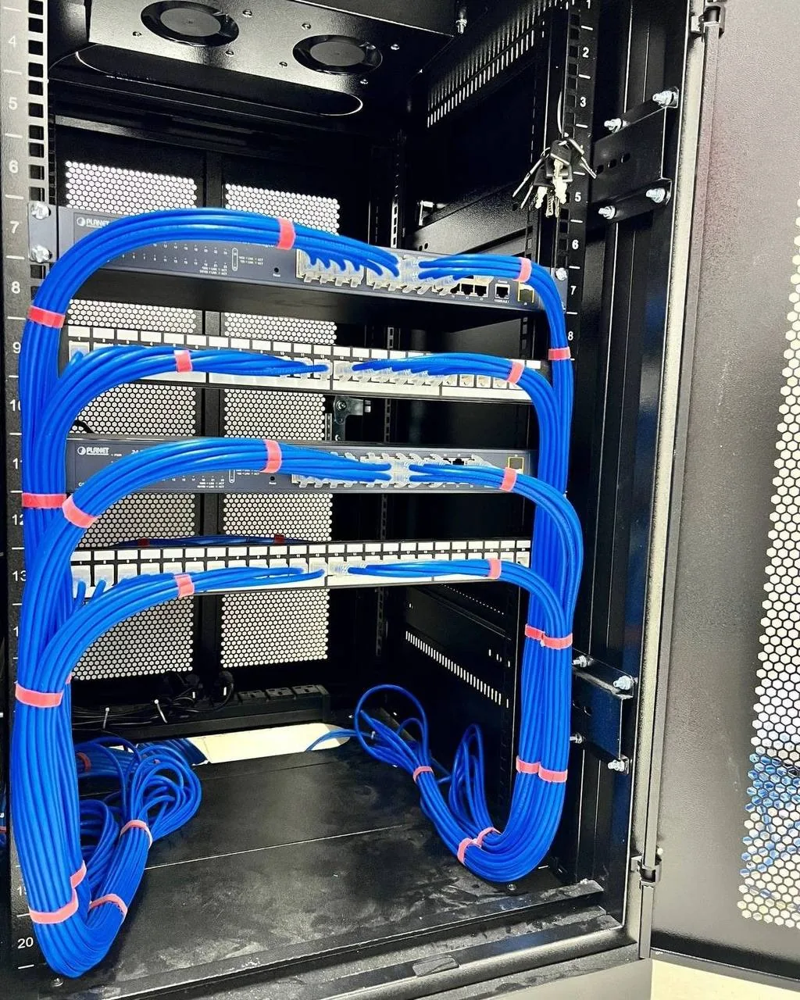

تهيئة الشبكات والـCLI
إعداد Fortinet وCisco وVLAN وRouting والجدران النارية وربط الفروع عبر VPN، مع معالجة الأعطال وتوثيق الإعدادات.
نستلم مشاريع الإنفرا للشركات من التصميم والتوريد إلى التنفيذ والتسليم: شبكات وحماية، سيرفرات وداتا سنتر، Grandstream، برمجيات وأتمتة وأنظمة مدمجة.

$ inspect network
firewall configured
branches connected
voice available▌
من تصميم الشبكة وتهيئة الأجهزة إلى التركيب والتكامل والتسليم.
إعداد Fortinet وCisco وVLAN وRouting والجدران النارية وربط الفروع عبر VPN، مع معالجة الأعطال وتوثيق الإعدادات.
تطوير أنظمة SaaS ولوحات تشغيل وتدفقات n8n لأتمتة المهام والتنبيهات، وفق متطلبات المشروع والتكاملات المتاحة.
تصميم وتنفيذ الشبكات السلكية واللاسلكية، تجهيز الراك والكوابل والسويتشات ومراكز البيانات مع فريق تركيبات ميداني.
برمجة UCM والهواتف والتحويلات وIVR وSIP Trunk ومسارات الوارد والصادر وربط السنترالات بين الفروع.
BioTime وZKTeco والكاميرات والإنتركم والتحكم في الدخول والشاشات التفاعلية من التركيب إلى التشغيل.
وصول آمن للخدمات بين الفروع والسحابة، إعداد حلول المراقبة والإدارة عن بعد وربط الأنظمة حسب بيئة العميل.
إدارة Windows Server وLinux وActive Directory وخدمات الملفات، وتركيب السيرفرات الفعلية ومراقبتها وحل أعطالها.
نشر وإدارة VMware وHyper-V وProxmox، وترحيل P2V، وتخطيط NAS وSAN وRAID والسعات المطلوبة.
إعداد Veeam وAcronis والنسخ الآلي والمراقبة والاستعادة، مع خطط التعافي واستمرارية التشغيل المناسبة لبيئة العمل.
تطوير وربط حلول Embedded مع الأجهزة والأنظمة الأخرى وفق متطلبات المشروع، من التجربة والتحقق إلى التكامل والتشغيل.
فحص وصيانة أجهزة الكمبيوتر واللابتوب والسيرفرات، الترقيات وإدارة طابعات Kyocera وخوادم الطباعة.
تخطيط توسعات البنية التحتية، حصر الأصول، التنسيق مع الموردين ومزوّدي الإنترنت، قيادة فريق التنفيذ وتسليم الوثائق.
تخصصات متكاملة للمشاريع الجديدة، والتوسع، والصيانة، وحل المشاكل المعقدة.
Server rooms · Racks · Patch panels · UTP · Fiber · Capacity planning
LAN/WAN · VLAN · Cisco · MikroTik · pfSense · Sophos · VPN · Routing
Windows/Linux · Active Directory · VMware · Hyper-V · Proxmox · P2V
NAS · SAN · RAID · Veeam · Acronis · Backup · Disaster Recovery
Grandstream · Asterisk · Issabel · Yeastar · SIP Trunk · Call Routing
CCTV · NVR/DVR · ZKTeco · BioTime · Access Control · Wireless APs
Hardware · Printers · Asset Management · Vendors · ISP · Troubleshooting
SaaS · Dashboards · APIs · n8n · Embedded Systems · Automation
نستلم مشاريع البنية التحتية للشركات من المعاينة والتصميم إلى توريد المعدات، تمديد الألياف والكابلات، تركيب الراك والسيرفرات، إعداد الشبكة والحماية والاتصالات، ثم الاختبار والتوثيق والتسليم. ننسّق التنفيذ مع فريق الموقع والمورّدين ومزوّدي الخدمة.

صور من الأعمال الفعليةنماذج أتمتة باستخدام n8n لربط المراقبة بالتنبيهات والتذاكر والتقارير. نحدد التكاملات القابلة للتنفيذ حسب أدوات العميل وصلاحياتها.
الفلو التالي مثال توضيحي وليس تكاملًا منفذًا لعميلصور من مشاريع الشبكات والداتا سنتر والاتصالات والتيار المنخفض، مرتبة حسب نوع النظام.
شارك نوع الأنظمة وعدد المواقع والتحدي الحالي، ونحدد الخطوة التالية ونطاق العمل المناسب.